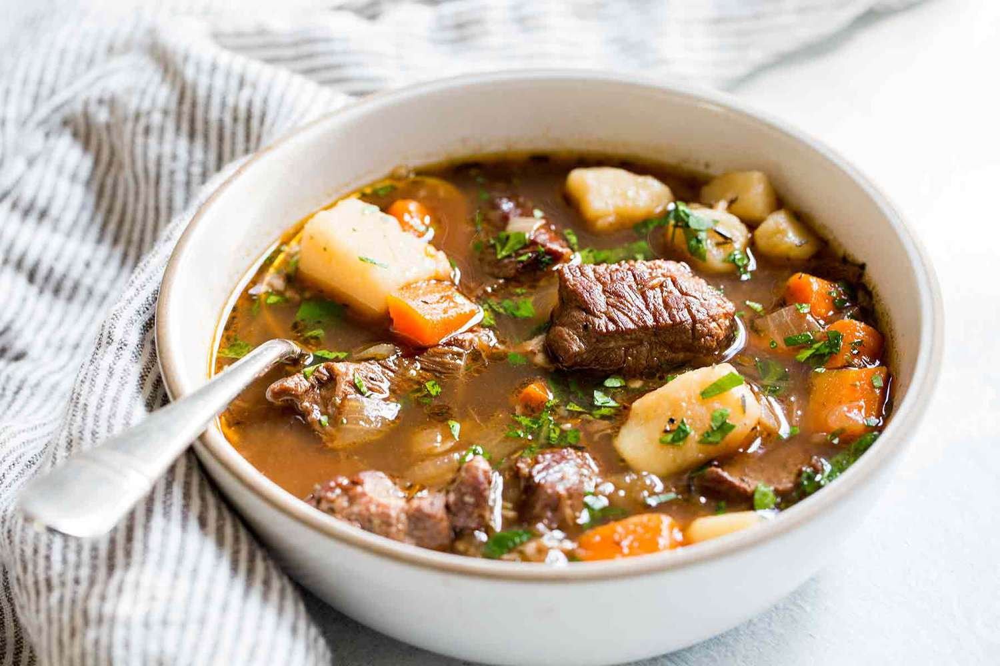

Irish Stew

Description
Irish stew is a stew native to Ireland that is traditionally made with root vegetables and lamb or mutton, but also commonly with beef.
Basic ingredients include lamb, or mutton, as well as potatoes, onions, and parsley.
Ingredients
- 3 pounds lamb shoulder chops;
- salt and ground black pepper to taste;
- 1 tablespoon vegetable oil;
- 1 onion, chopped;
- 1 tablespoon butter;
- 2 tablespoons all-purpose flour;
- 3 cups chicken stock;
- ½ teaspoon dried rosemary;
- 2 carrots, chopped;
- 2 stalks celery, chopped;
- water as needed;
- 1 ½ pounds baby potatoes;
- ¼ cup chopped green onions.
Steps
- Season lamb shoulder chops with salt and black pepper.
- Heat oil in a large heavy skillet over high heat. Working in batches, cook lamb shoulder chops until browned on both sides, 3 to 5 minutes per side. Transfer chops to a stock pot.
- Cook and stir onion with a pinch of salt in the same skillet over medium heat until slightly softened and edges are browning, about 5 minutes. Stir butter into onion until melted; add flour and stir until onions are coated, about 1 minute.
- Pour stock into onion mixture; bring to a boil, add rosemary, and stir until mixture thickens, 5 to 10 minutes.
- Stir carrots and celery into pot with lamb shoulder chops and pour chicken stock mixture over the top. Add water as needed to cover meat completely. Bring mixture to a simmer, reduce heat to low, cover the pot with a lid, and cook until meat is almost falling off the bone, about 1 1/2 hours.
- Transfer meat to a plate. Stir potatoes into stew and return meat to stew, placing on top of vegetables. Simmer, covered, until potatoes are tender and meat is falling off the bone, about 30 minutes.
- Transfer meat to a plate using a slotted spoon. Bring stew to a boil and cook, skimming off fat, until stew is reduced and thick, 10 to 12 minutes.
- Remove meat from bones; discard bones and any pieces of fat. Stir meat back into stew. Stir green onions into stew and season with salt and pepper to taste.
Back to the recipes